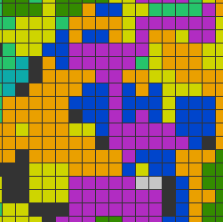
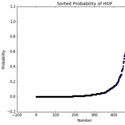

Who am I?
Greetings! I'm Zach, and I love digging into deep questions using data analysis techniques. I started out my career by getting a Ph.D. in Physics and applying my love of statistics and coding to the "deep problems of the universe." I've run experiements that studied how nuclei split apart to release energy (nuclear fission), what makes up a nucleus, and numerous other physics topics. All of these tasks shared two common themes: how do we get tons of data and what do we do with it once we have ti? Solving these problems was the key to unlocking the answers to the puzzles of the univers. However, for me, what always mattered the most was problem solving through data techniques. So, yes, I've loved working with huge collaborations to study what happened in the first nanoseconds after the Big Bang... but I'm just as excited to use analysis techniques to predict what soup someone will eat based on their lifestyle! I'm also a musician, a rock climber, and have a deep love of green chile. See More...Featured Projects:

Random Walker
This code visualizes the random walk of... yada yada yada yada yada yada yada yada yada yada yada yada yada yada yada yada yada yada yada yada yada yada yada yada yada yada yada yada yada yada yada yada yada yada yada yada yada yada yada yada yada yada yada yada yada yada yada yada yada yada yada yada yada yada yada yada yada yada yada yada yada yada yada yada yada yada yada yada yada yada
